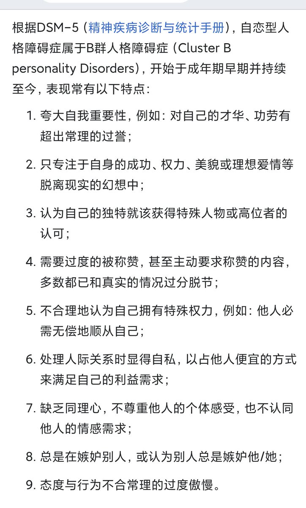

NPD（Narcissisticpersonalitydisorder）自恋型人格障碍的典型特征：真名曾多次发推说自己是神，自己说的都是对的，符合第1条，并认为自己可以做别人的人生导师，别人应该追随他，符合第5条，在和我谈恋爱的时候我多次表明自己很不舒服，他不但没有安慰我却反过来说我不重视他，符合第7条。经常未经我同意就把我们私聊的记录发到公共平台，未经我同意就涂抹我的原创作品，还是符合第7条。他会把自己所有的错误都归结于别人，他辱骂群友是群友打扰了他的对话，他辱骂Lumin是因为Lumin反驳了他的逻辑，并把自己包装成受害者，委屈屈说都是竹蜻蜓的错，符合第9条。
另外，他自己承认自己有asd，所以在逻辑混乱（但他自己觉得很自洽）的基础上还不愿意共情别人的感受，那就乱上加乱了，没法说。
唐毓文说我分手是遭报应了，但就这人的人品来讲，我是幸运的，没分手才是遭报应。
至此我不会再回应和他有关的任何事，反正我不管怎么说他都会把责任反弹给我，我知道我的名声也不怎么好，我在维护我的基础权益，至于你们信谁我也不care，反正你们就看他发的推吧，天天在那发癫，像个疯狗一样见人就咬。
另外，他自己承认自己有asd，所以在逻辑混乱（但他自己觉得很自洽）的基础上还不愿意共情别人的感受，那就乱上加乱了，没法说。
唐毓文说我分手是遭报应了，但就这人的人品来讲，我是幸运的，没分手才是遭报应。
至此我不会再回应和他有关的任何事，反正我不管怎么说他都会把责任反弹给我，我知道我的名声也不怎么好，我在维护我的基础权益，至于你们信谁我也不care，反正你们就看他发的推吧，天天在那发癫，像个疯狗一样见人就咬。
